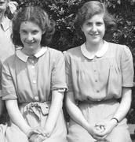

|
I haven’t much to record today except that the whole of Gym was spent in playing volleyball. This seems as good an opportunity as any to record our Rugby results this season:—
[I have left space for the 2nd and 3rd team results but do not have them to hand.] |
|
The main event today was the N.H.S. meeting [after school] when Mr. Dodds gave his eagerly awaited talk on “The Story of Evolution”. |
|
Many of the Upper Sixths were absent today doing Oxford Local Examinations — in English Language mainly. During first period four or five of us did polarisation experiments in the Senior Lab. dark-room. At 11.20 the Dr. Barnes choir went off to the Memorial Service held in the Cathedral. [Michael] Counsell, Bent and I went with Mr. Smith in his car. The Service began with the Sentences and 23rd Psalm, the Lesson and the Hymn To Be a Pilgrim. The Sentences were read by the Very Rev. H.G.M. Clarke (Provost of Birmingham), the Lesson by Rev. J.H. Linton (Assistant Bishop of B’ham). The Suffrages were read by the Ven. S. Harvie Clark (Archdeacon of Birmingham) and the Collects by the Ven. C.G.St.M. Parker (Archdeacon of Aston). The Hymn Breathe on me, breath of God followed, and after the Offices had been said completely, Mr. James Grey, Warden of Overdale College, representing the Free Churches, said three additional prayers. The Blessing was pronounced by the Bishop of Birmingham, Dr. J.L. Wilson. The family and other mourners included Mrs. E.W. Barnes, Mr. John Barnes, Mrs. Wm. Barnes (sons), Dr. Stanley Barnes (brother), Miss N.A.V. Owen, Sir Herbert Stewart and members of the staff formerly at Bishop’s Croft [Harborne]. The congregation included the Bishops of Coventry and Hereford, the Bishop in Egypt (Rt. Rev. Geoffrey F. Allen, formerly examining chaplain to Dr. Barnes). There were 22 canons from B’ham and neighbouring dioceses. The Archbishop of Canterbury was also represented and Dr. Maldwyn Edwards represented the Methodists. Also present were the Lord Mayor (Ald. G.H.W. Griffiths) and Lady Mayoress, the Town Clerk, aldermen and councillors, governors of the University and K.E.S. and representatives of commerce & industry. After the service the Choir rode in the Funeral Procession to Lodge Hill Crematorium. We sang the Nunc Dimittis and the Hymn Jesu, Lover of my Soul. |
|
My Physics experiment this morning was to find the Moment of Inertia of a disc by allowing it to roll down an inclined plane. In J.T.C. I acted in my usual capacity as C.S.M. “C” Company paraded on the square for the first time last week. This week I drilled the platoon in the Science Court till nearly 3.0pm, then took them inside for a twenty minute lecture on Map References, finishing up with more drill. I went to Evening Prayers afterwards, then walked with Polly Harmer as far as Priory Road as usual. [I know David Harmer from being in Rem. C together; he is in the Geography VI now. His father, Rev. H.F. Harmer, was ordained about four years ago, and they have moved from 6 Park Road, Moseley, to Christ Church Vicarage, 34 Grantham Road, Sparkbrook.] At Club tonight we had a dancing evening. |
|
During the first three periods today I wrote the script for “Pictures in Music” No. 2. I received my contract by the morning post. My fee is five guineas, which works out at the rate of £630 per 40–hor week. Unfortunately, the B.B.C. doesn’t employ me for 40-hour weeks! Otherwise I could retire at nineteen. Our lecture [in Big School] was by Mr. Justice Finnemore, O.E., on “The Law of the Land”. It didn’t end until twenty to one. Tonight I took Helen to the R.H. [Robin Hood] to see Spaceways (U) which I heard some months ago as a radio play. |
|
I went to both today’s services [at 11.0am and 6.30pm] and the Youth Fellowship at 8.0pm. The Rev. W.S. Terry was the preacher in the morning. |
|
Nothing happened at school today, first day of my last full week at K.E.S. In Chemistry [all afternoon] Torvell and I prepared Ferrous Oxide [by heating Ferrous Oxalate in a dry test-tube closed with a plug of glass-wool. The green Oxalate changed to black Ferrous Oxide. When we removed the glass-wool and sprinkled some of the Ferrous Oxide into an evaporating basin it spontaneously ignited as it was oxidised to red Ferric Oxide. FeC2O4 —> FeO + CO + CO2. It was quite spectacular!] |
|
In the first two periods this morning I wrote part of an essay for Mr. Ballance on the structure and functions of the leaf. At break I went to a Choir practice in the Music Room. The XXII and Chapel Choirs are rehearsing on alternative days this week for the Carol services. Actually each choir will be reinforced to a strength of 60 or 70 for each performance. It’s going to be quite a crush in the gallery. In Gym we played volleyball. |
|
In Physics today we have been studying the topic of Double Refraction, in Chemistry buffer solutions. It was pleasant not to have to go to an N.C.O’s parade at 1.0pm. During [entry left unfinished] |
|
There seems to be nothing to record of today’s events. It rained very slightly but the weather is still very warm. It seems quite fantastic but the lowest temperature recorded so far this winter is s7 degrees, in fact on only eight days has the temperature fallen below 40 deg. The average temperature in September was about 59 deg, in October 52 deg, November, and December to date, 46 deg. It has been the mildest Autumn for many years and even the birds seem to think it is Spring. There are several Spring flowers in the garden already in bloom, and some late pansies, a rose or two, quite a number of marigolds. |
|
I couldn’t help wondering as I went off to school this morning, when would be the next time I should put on uniform. In Physics I did an experiment to find the moment of inertia of a flywheel. In Biology we are studying the Blood Vascular Systems. At break we had a Chapel Choir practice — the first we had had for Evensong tonight. In J.T.C. I acted as C.S.M. for the last time. We had a rather lengthy inspection then platoon drill in which I let my N.C.O.’s take charge in turn. |
|
There was a Choir Practice during first period this morning. Our Sixth Form Lecture was by a gentleman whose name I don’t know but is Chief Inspector of Birmingham Schools. He gave a talk on “Musical Variations” but it was so “bitty” and incoherent, and his illustrations poorly performed, that it was quite obvious he should have kept to education so far as lecturing was concerned. I came home through town with Dr. [Willis] Grant who admitted that it beat him, he could make nothing of it. I looked round Smith’s and got home at 2.0pm. |
|
The cutting is from today’s Sunday Mercury. The photo was taken [by Dad] at Margate on July 28th. I went as usual to both the 11.0 and 6.30 services. The morning service was rather boring — it was a B.B. [Boys Brigade] Church Parade and was conducted by the vicar [minister, Mr. Dibben] of course. Tonight we had Rev. D.S. Hubery. |
|
In Choir practice [after morning school] we had a final rehearsal of the carols for tonight. At 1.45 I and some six others took leave of the Chief Master. First we all went into his study for a general talking-to, then we departed to fill in record cards before saying our individual farewells. The Chief said a few rather flattering things and gave me his good wishes. I spent the rest of the afternoon in the library and came home on the S.B. It rained and was still doing so when Mam, Clarice and Julia went with me to this evening’s carol service at 7.0pm. The order of service was:— Hymn: Once in Royal David’s ... |
|
This morning found Birmingham and most of the country under a thick blanket of fog. The Special Bus arrived at 9.30am but some boys didn’t arrive until eleven o’clock. There were no House meetings so school finished [twenty minutes early] at 12.45pm. I had a Choir practice during the greater part of the first two periods. In my last Gym period we played a sort of football-tennis in which the ball had to be kept bouncing. I said Goodbye to Mr. Cotter. In Biology we went into the Large Lecture Room where a couple of other forms were watching films on the petroleum industry. After dinner I cycled to Clay Lane to change my N.I. [National Insurance] card. Tonight Helen and I went to our Carol Service [at Church]. |
|
Today I have said Goodbye to Mr. Gosling, Mr. Mathews, and Sgt. Major Moore. In French we finished reading the second of Voltaire’s short stories Memnon. The first one we read was Le Monde Comme Il Va. In Physics we started revising Radiation. This afternoon I presented a book to the School Library. It was Forewarned is Forearmed, the R.O.C. History by T.E. Winslow which I bought about three months ago. |
From 9.15 until 9.30 we had House Meetings — ours was conducted by Mr. Skinner in the absence of Mr. Copland who has an abcess in his ear, and Mr. Parry who is with the School XV in London. (Yesterday the XV were defeated 3–10 by Christ’s Hospital.)
P.J. Riley, who is also leaving, made a speech on Psychology. I don’t know quite what for.
First two periods were as usual, then came Break (but there was no milk!) followed by form-masters and finally Prayers. I said Goodbye to Mr. Whinnerah and Mr. Kent and to about fifty of my friends.
But the sad feeling due to leaving school was tempered by the fact that I was achieving an ambition in my B.B.C. appearance this evening [in “Schoolboy’s Choice”]. I’ve always wanted to disc-jockey, and it was the thrill of a life-time.
I arrived at the B.B.C. at 3.30 and could soon hear the strains of Holst’s Mars — the technicians were playing some of my records. For the first forty minutes Graham Gauld and I chose the sections I wanted (the records were marked with a yellow wax pencil) then, after a run-through, I had a hurried coffee and a couple of scones, and was back in Studio 2a just after five for a last reading.
It was great fun having a whole studio to myself. The technicians fixed things so that I could hear the music, and the whole thing went without a hitch. The records I played were:
1. March from Orpheus in the Underworld, Offenbach2. On Hearing the Cuckoo in Spring, Delius
3. Mars, the Bringer of War from The Planets Suite, Holst
4. El Salon Mexico, Aaron Copland
5. Sinfonia Antarctica, Vaughan Williams
6. The Steel Foundry, Mossolov
7. Pacific 231, Honegger
|
I started my annual Post Office work at 7.0 this morning. After going into the main office [Acocks Green Post Office] I had to go up to the temporary office in Stockfield Road. This year however, we are using the T.A. [Territorial Army] Barracks instead of the [Congregational] Church Hall. I am again on Walk 17 with Charlie but will be keeping to Circular Road and environs as Mrs. Osborne is walking Dolphin Lane. There wasn’t a great deal of mail today. I took out the parcels at 7.30am, had breakfast [at home], was back at 10.0 to deal with the letters and at 12.30 I had a break of over an hour for dinner. I had completed the afternoon delivery by 4.0pm. [During the day I also went to the bank and paid in the 5 guineas I received from the B.B.C.]. I wrote on October 27th last that 13 for Dinner would not last long in the West End. It opened last night at the Duke of York’s — and closed. It survived just one performance. We had games at Club tonight. |
|
So far there has not been much mail to deal with and I finished by 3.30pm today. Tonight Helen and I went to the Youth Club’s Monthly Social. [It was in the hall where there is a stage and we did square dances to gramophone records. Mr. & Mrs. Thomas were in charge as usual.] |
|
Very few of the temporaries were working today and unfortunately I wasn’t one of them. It will make about £1 difference in my pay. [After last night’s exertions] I did not wake up until 12.30 so I was unable to go to Morning Service, and I couldn’t go tonight because Mr. Ballance came to tea. We invited him and Dr. Gough as Mr. Ballance taught him many years ago. I thought it would be a nice reunion for them but unfortunately Dr. Gough couldn’t come. |
|
I don’t know whose was the bright idea to cut down the deliveries yesterday but we certainly paid for it today. It was well past eleven before we could start the morning delivery and my bag was quite crammed even though Charlie was helping me out by delivering the Hyron Hall and Fanshawe Road letters. Things were easier in the afternoon though, and I had finished by 5.0pm. Don and Ron brought the set back this evening. |
|
Today’s mail was about as heavy as yesterday’s. Having got rid of all the parcels and after a quick breakfast, I went back to do the sorting and placing and did not complete the morning delivery until three, though I had had dinner in the meantime. [I also managed to go to the Bank to withdraw 8/-.] This evening I took Helen to the Olton and saw Albert R.N. (U) and Love in Pawn (U). |
|
Yesterday we dealt with 2,785,851 letters and cards, slightly less than on Monday but still higher than any previous figures for one day. Today was about the same. So far as I can see, no one ever has posted, or ever will post early for Christmas. It was dark long before I had finished and as my lamp wouldn’t work I had to do Starcross and Hyron Hall Road by the light of the street-lamps. [I managed also to go to the Bank and withdrew £3. I have had a very interesting letter forwarded from the B.B.C. It is from Marcus Bennett, whom I know slightly from our being in “Midland Magazine” together. He lives at 42 Herrick Road, Clarendon Park, Leicester:— I knew when I was writing the script that a composer being dead doesn’t make him “classical”, but couldn’t think of any other word to use. To call it “serious” makes it sound boring. On looking them up I have found that Scarlatti lived from 1665 to 1725 and Schubert 1797–1828.] After a hurried wash and a quick tea I went Carol singing with Phil and Co. who had called for me. We went in the car to Moseley. [Philip has just finished his two years’ National Service. We had a wonderful time, about eight of us, singing on the doorsteps of posh houses and being invited in for mince pies and a glass of port. At some houses we were given a 10/- or £1 note; as usual we are sending the money to the National Children’s Home.] |
About 7.30pm I went Carol Singing with a party from Church. When I got to church the party had already gone but I soon heard the singing and joined the party in Victoria Road. Helen was there and we went round together, and I held her hand.
We went down Oxford Road and Sherbourne Road [where the Manse is], and at Broad Road we sang outside the block of flats. When we had finished I took Helen home & wanted to kiss her. [Photo: Helen, 1953]
|
As I didn’t wake until 7.30am, I had quite a rush to go to Holy Communion at 8.0 with Helen. About seventy were present, and there were nearly two hundred at the 11.0am service. I had considered going to St. Andrews, where Blues beat Notts County 3–nil, but it was rather cold and we had breakfast too late anyway. My main present this Christmas is a very fine briefcase in black leather which will prove most useful when I go to Medical School on Monday week. In addition I had my usual Diary, a copy of Preview 1952 which Mam was able to purchase below the original cost, a pair of socks and a box of chocolates. Clarice and Julia gave me my usual Film Diary and chocolates besides, and I had a tie from Freda [Jones at Stoke-on-Trent]. Charlie came in for a cup of coffee at about 9.45. He seemed to have plenty of work and [I] don’t suppose he finished [the Christmas Day delivery] very early. This afternoon I sat in the lounge and took down some weather readings. Earlier we had all listened to the Queen’s broadcast at 3.0pm. The Queen expressed her sympathy for the relatives of people killed in a terrible rail disaster in New Zealand late last night. |
|
We got up rather latish this morning. Grandad came for dinner around 12.30pm. We all spent the afternoon sitting in the lounge in front of a blazing fire. Grandad didn’t stay long after tea and went home before TV started. Following the week’s Newsreels there was “Garrison Theatre” at 8.15 from the R.C.A.F. Station, North Luffenham. Bob Monkhouse did very well as compère. At 9.30 there was Episode 1 of “The Teckman Biography”, which has Patrick Barr and Pamela Alan in the lead. It promises to be one of the best serials yet. It is written by Francis Durbridge and produced by Alvin Rakoff. “Café Continentale” took the form of a special party in honour of Maurice Chevalier. |
|
Boxing Day finished up very badly for us. Shortly before midnight Clarice complained of stomach pains and within ten minutes of our ’phoning, Dr. Wiseman arrived and confirmed our diagnosis of appendicitis. Dad and I went with Clarice in the ambulance and she is now in Ward C1 at Selly Oak [Hospital]. |
|
This morning I did some shopping then went for a walk with Ginger. Helen came with me. We walked [along Warwick Road] to Solihull then to Elmdon via Lode Lane and home via [Coventry Road and] Yardley. I phoned the hospital at about one o’clock and they said that Clarice was comfortable [after the operation]. Mam, Dad and Julia went to see her this evening. During the afternoon we watched a British thriller film The Phantom Shot. As TV films go. this was very good and I can’t recall its having been shown before. One of the stars of the film was Howard Marion-Crawford; the film itself was adapted from a story entitled Who Killed Caleb Horder? |
|
I had not seen John Winrow for about a month when I called on him today. I found him in the Music Shop in Ladywood Road and we spent an hour and a half in there together. The old fellow who keeps the shop is a queer chap and I don’t think he does much trade; John is obviously his one regular customer, and he usually cajoles John into a game of chess as was the case today. John’s record collection is nearly 400 strong now and must be of quite considerable value. After dinner John came round and we walked from the Rialto to the Robin Hood with Ginger. On TV tonight we watched “The Case of Dr. Ambrose”, a mystery by Ellan Adkins and Gordon Harbord. It must rank as one of the successes of the year and reminded one of Dial M for Murder. Emrys Jones and Ursula Howells starred. |
|
I had intended to go walking this morning but when I got up it was very foggy and when I did go down the village to do some shopping it was raining as well. When I ’phoned the hospital at dinner time they said that Clarice would be coming home tomorrow morning. I also made a ’phone call to Mrs. Moore. I actually spoke to Margaret; Mrs. Moore was at Miss Derrington’s funeral. Miss Derrington died at Church Stretton on Christmas Eve. I had no room yesterday to mention that “The Name’s The Same” made its TV debut. It was quite a success and should become just as popular as WML [“What’s My Line?”]. The radio version has a high listening figure. Frank Muir and Denis Norden “made” the show last night, Viscountess Boyle was also a great success. Brenda Bruce will improve, [Bernard] Braden should be an excellent chairman. |
|
Another year draws to a close and it doesn’t seem so very long ago that I was writing similar words in my 1952 Diary. This morning John and I walked with Ginger along Grange Road, Streetsbrook Road and Fox Hollies Road. Mam brought Clarice home from hospital. During the afternoon I had a bath and Clarice and Julia watched a 110-minute TV production of Toad of Toad Hall. I phoned Dr. Gough and he called in to see Clarice at 6.30. This evening I am going to the New Year’s Eve Social at Church and then to the Watch Night Service. 1953 was my last year at school but was also made memorable, for me at least, in other ways. God works in a mysterious way, sometimes slowly but always so surely, and after months of doubt and indecision as to my immediate future, God gave me the answer when I went to the Guild Social on January 13th. And so in a few days’ time I become a student-technician at the Medical School, and I feel sure I am doing the best thing in all the circumstances. One of the most enjoyable weeks of 1953 for me was the week I spent at Juniper Hall in April. I was really able to relax in the beauty of the Surrey countryside and again when we went to Margate for a fortnight. Somehow though, apart from my visits to the cinema, I don’t seem to have been able to relax properly for ages, and I have been far from well these last few months, catching cold after cold. At school it seemed I never had a spare moment and I came home on the Special Bus only a handful of times last term. I remained Secretary of the Natural History Society and was a Platoon Commander throughout the year, though I didn’t get promoted to Sergeant until September. I made a number of broadcasts in radio and TV:— “Traditions in Public School Singing” (Overseas Services), “Town Forum” (TV, Home and Light), “Pot-Pourri” and “Pictures in Music”, and I have several ideas for programmes in 1954. I also wrote a book, started a play, and have still to develop ideas I have in mind for a short story, a comedy play, and a children’s historical play, Whether I accomplish any of these ambitions remains to be seen. I have yet to pass “A” level ... But above all I shall remember 1953 as the year in which I found new fellowship at the Methodist Church and discovered new friends, one in particular. I found other friends at school too. Of my many interests probably one received more attention than I had given it before — music. This has been due to the various activities of the Musical Society and Music Circle, to my being a member of Dr. Willis Grant’s option period for a year, and to John Winrow’s collection of gramophone records. I have been to the cinema 36 times this year, have developed a more extensive liking for films in general e.g. I now like an occasional film with a historical background, and the “Ali Baba” sort of film. At the same time I have developed a greater perception and am less easily pleased. The best films of those I saw were Genevieve, The War of the Worlds, House of Wax, April in Paris, The Prisoner of Zenda, Young Bess, Quo Vadis, Albert R.N., and Caroline Chérie, Night Beauties and Adorable Creatures. Films I didn’t like: Don’t Bother to Knock, Rose of Cimarron, Once a Sinner, Kentucky Jubilee (ugh!), Cow Country, Three Steps in the Dark. Films that amused me: It Grows on Trees, Monkey Business, Father’s Doing Fine, Road to Bali, Top Secret, Made in Heaven, Top of the Form, Stop—You’re Killing Me, The Oracle, Will Any Gentleman?, and of course three of the films I listed as best of the year. I wish we could have lots more comedies, some good musicals from Britain (or even a musical), and no more films about the American Civil War, Red Indians, Korea. In the theatre I saw three excellent plays at the [Theatre] Royal:— Call Me Madam, The Moon is Blue, and Meet Mr. Callaghan, also Zip Goes a Million at the Hippodrome, and an outstanding Music Hall act — Terry-Thomas — at the same theatre. The biggest disappointment was 13 for Dinner. TV gave us good value for money about one night in four I should think, but when it was good it was very, very good. Omitting the Coronation, which it would be sacrilegious to describe as entertainment, Sport was probably the highlight. We saw Stanley Matthews win the Cup Final for Blackpool, England held to a draw by the F.I.F.A. and eclipsed by Hungary, England winning the Ashes, the Wimbledon Championships, and Speedway Racing, Rugby Football, Swimming, Boxing, Snooker, Ice-Hockey and doubtless one or two more sporting activities — Athletics and Motor Racing are two more which spring to mind. Good plays were again in short supply. I liked Number Three, Take Away the Lady, The Black Sheep of the Family, Two of Everything, Half Seas Over, Joking Apart, Count Your Blessings, Libel (one of the successes of the year), High Horse, and Rose Without a Thorn, and The Case of Dr. Ambrose. I have been recalling some of the big 1953 events:— In January, Mr. Churchill visited Washington to confer with President Truman. On the 20th Mr. Eisenhower was sworn in as President. Two ships hit the headlines: the 26,000-ton Canadian Pacific Liner Empress of Canada was burnt out in Gladstone Dock, Liverpool, and 5 days later on the 31st the B.R. Steamer Princess Victoria sank off the Irish coast — 133 were drowned. February brought devastating floods to the East coast and to Holland. 300 died in this country, and in Holland the damage amounted to £100,000,000 and the death toll was 1200. The Queen and the Duke visited the stricken areas & Queen Juliana and Prince Bernhard visited London. March. On the 5th a Polish pilot seeking political asylum flew a Russian built MIG fighter to Bornhdm, a Danish island in the Baltic. Stalin died on the 6th, Mr. Klement Gottwald President of Czechoslovakia died eight days later, and Queen Mary died on March 24th. In Kenya 100 loyal Kikuyu were massacred by Mau Mau terrorists. At home the Boat Race was won by Cambridge by eight lengths. On April 4th a Comet Airliner on the first trip of the new passenger service between London and Tokyo, covered the distance in 36 hours. Mr. Eden cancelled his European trip, later had three operations including one in U.S.A. Dr. C.E.M. Joad died on April 9th. The same day, Princess Josephine Charlotte (Belgium) and Prince Jean, the hereditary Grand Duke of Luxembourg, were married in Luxembourg Cathedral. England and Scotland drew 2–2 at Wembley. Mr. Churchill was made a Knight Companion of the Most Noble Order of the Garter. In May, a Singapore-London Comet crashed in Calcutta. 43 died. Blackpool won the Cup. It was London’s hottest Whit Monday for years. June brought the pageantry and splendour of the Coronation. Everest had been conquered ; Hunt a& Hilary were to be knighted. The Queen Mother and Princess Margaret flew to Rhodesia in a Comet. July. Seixas (U.S.A.) beat Neilson (Denmark) in the Men’s Singles. “Mo” Connelly beat Doris Hart 8–6, 7–5, 9–7, 6–3, 6–4. Mr. Beria was expelled by the Russians. Hilaire Belloc died. The Brabazon bombers which cost £605m were to be dismantled. On the 27th the Korean Armistice was signed. Senator Taft died on the 31st. During August the Mile Relay record was broken, 4 million people were involved in strikes in France, earthquakes devastated the Ionian isles, Dr. Mossadek’s Govt. was overthrown by troops supporting the Shah of Persia. England won the Ashes. Prof. Auguste Picard descended 3450 ft. below the Mediterranean in a bathyscaphe. September. 7th. Duke flew a Hunter at 727.6 m.p.h. There were earthquakes in Cyprus (10th) and Fiji (14th), and N.Z. (29th). Sugar was de-rationed. October saw return of Mr. Eden, death of Renthe (5th) and Kathleen Ferrier (8th). 3 Western Foreign Ministers met. An Atomic weapon was exploded at Woomera. November saw the death of Dylan Thomas (39), King Ibn Saud of Saudi Arabia, and Dr. Barnes. Mr. Truman refused to be investigated. London’s terrible fog killed thousands. The Queen began her World Tour. The Piltdown Man was shown to be a fake. England lost 3–6 at Wembley. And December. There was a three-power Conference in Bermuda. On Christmas Eve 150 were killed in a rail crash in N.Z., and over a hundred in another crash in Czechoslavakia. So 1953 has been a memorable year in many ways. [I am in love. The picture, from the June 1953 photo of Acocks Green High School, is of Helen — and her best friend, Freda Powley (right).]  |